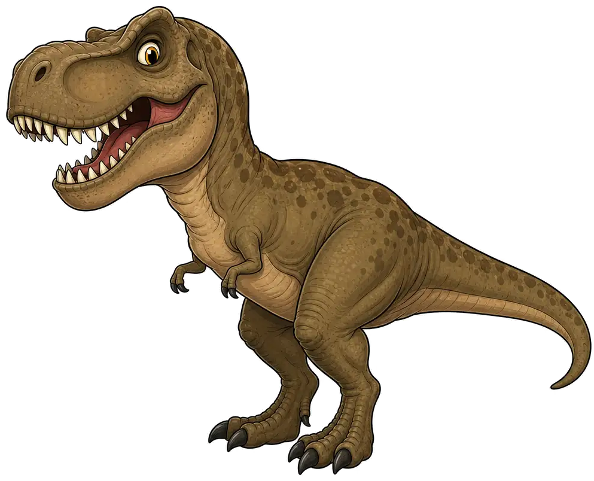

SPECIMEN ONLINE
LATE CRETACEOUS · 68 MILLION YEARS AGO
MEET THE
APEX
PREDATOR.
Dengarkan raungannya. Amati gerakannya. Berani berhadapan dengan penguasa prasejarah?
T-REX ROAR READY
Rexy sedang mengamati wilayahnya. Pilih aksi untuk memulai.
SPESIESTYRANNOSAURUS REX
TINGGI± 4 METER
TIPEAPEX PREDATOR
FIELD LOG / 001CAUTION: HIGH RISK

REXY / T-REXMOOD: ALERT